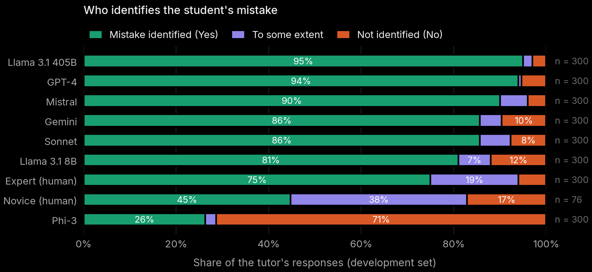
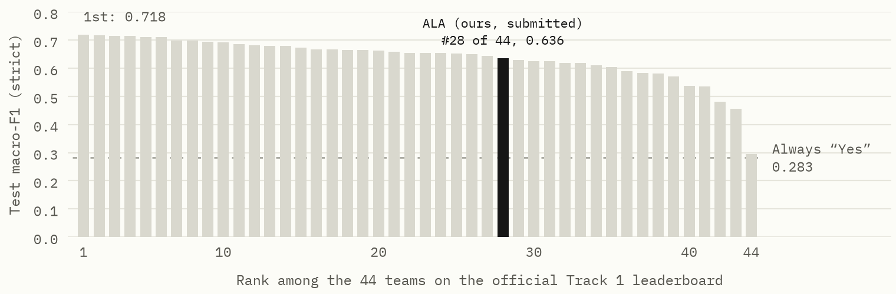
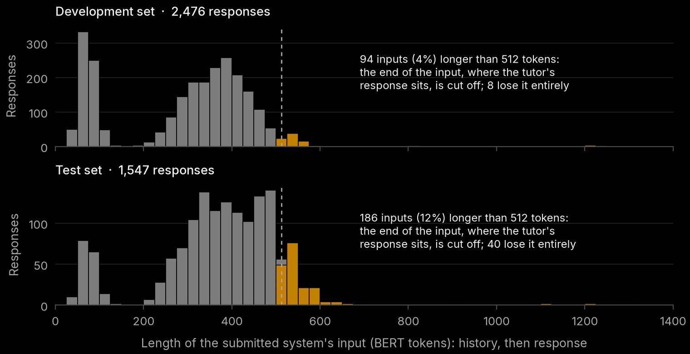
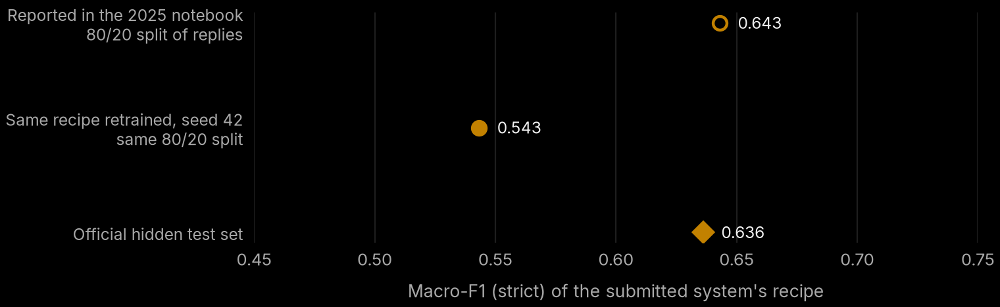

Did the tutor notice the mistake? Auditing and rebuilding a BEA 2025 shared-task classifier
Our submission to the BEA 2025 shared task placed 28th of 44. This is what was wrong with it, and a stronger system built from what the audit found.
The task
Language models are increasingly used as maths tutors, and a good tutor's first job when a student gets something wrong is to notice. The BEA 2025 shared task [1], held with ACL 2025, asked teams to judge tutor replies automatically. Each example is the end of a tutoring dialogue in which the student has just made a mistake, followed by one tutor's next reply. Track 1, Mistake Identification, asks whether that reply recognises the mistake:
- Yes: the mistake is clearly identified.
- To some extent: the reply suggests there may be a mistake but sounds unsure.
- No: the reply does not recognise it, for example by praising the answer or moving on.
Every dialogue comes with replies from up to nine tutors: seven language models and one or two humans. One development-set dialogue shows the range:
DialogueTutor: What is 163 − 156? Student: 13
GPT-4 · Yes“You're close, but let's try again. Remember, when you subtract 156 from 163, you should get 7.”
Human novice · To some extent“Kindly recheck your answer.”
Gemini · To some extent“That's a great start! Let's double-check that subtraction, 163 − 156 equals 7.”
Phi-3 · No“That's correct! Now, can you try solving 204 − 189?”
The Gemini reply states the right answer yet was labelled “To some extent”, presumably because it opens with praise. The labels are human judgements with substantial but imperfect agreement (Fleiss' κ of about 0.65 across the four dimensions [1]), so no system can be expected to match them exactly.
Systems are ranked by macro-averaged F1 over the three classes, which weights the rare classes as much as the common one:
where \(P_c\) and \(R_c\) are the precision and recall of class \(c\). A “lenient” variant merges Yes and To some extent. Always answering Yes scores 0.283 on the test set.
Data
The organisers released a labelled development set of 300 dialogues with 2,476 tutor replies, drawn from the MathDial [3] and Bridge [4] corpora (MRBench [2]), and an unlabelled test set of 191 dialogues with 1,547 replies. There is no separate training set: everything a system learns comes from the 2,476 development replies. The test labels were never released; scores come from the organisers' submission server.

Three properties of the data shaped everything that follows.
- Replies come in groups. All replies to a dialogue share its history, the student's mistake and often its numbers. Thirteen pairs of dialogues even share an identical history under different ids, so the {{data.n_dev_conversations|int}} dialogues contain only {{data.n_dev_histories|int}} distinct conversations.
- The rare classes decide the score. “To some extent” has 174 examples. Because macro-F1 weights it equally, a system's rank is set mostly by how it handles the 544 replies that are not Yes.
- The test set differs. Its dialogues are longer (median {{data.test_tokens.median|int}} tokens in the submitted system's format, against {{data.dev_tokens.median|int}}), and its labels are less one-sided. The organisers' majority-class baseline (accuracy 0.7363 strict, 0.8255 lenient, on 1,547 replies) pins down the hidden test labels' mix exactly: {{data.test_label_counts_derived.Yes|int}} Yes, {{data.test_label_counts_derived.To some extent|int}} To some extent and {{data.test_label_counts_derived.No|int}} No, that is 73.6%, 8.9% and 17.5%, against 78.0%, 7.0% and 14.9% in development.
The submitted system
Our team, ALA, entered Track 1 in April 2025 with a fine-tuned BERT classifier [5] written in a Colab notebook:
- Input: one string,
"Conversation history: {history}\nTutor: {response}", cut at 512 tokens. - Model:
bert-base-uncasedwith a three-way classification head. - Training: the Hugging Face
Trainerdefaults with a learning rate of 1×10−5, batches of 16 and 4 epochs, on a random 80% of the development replies. The weights after the last epoch were used. - Validation: the other 20%, 496 replies: macro-F1 0.643, accuracy 86.3%.
On the hidden test set it scored macro-F1 0.636 (accuracy 84.2%; lenient macro-F1 0.849), 28th of the 44 teams on the official leaderboard. The winner scored 0.718.

Reproducing it
I re-implemented the notebook's training exactly (same tokenizer, input string, optimiser, schedule, batch size, epochs and the same 496 validation replies, replayed index for index from its random split) and retrained it on a laptop GPU. Training loss averaged 0.508 over the run against the notebook's 0.527, but the validation score was not reproduced: macro-F1 {{ala.notebook_split.strict_f1|3}}, not 0.643. The reason is the rarest class. The retrained model predicted “To some extent” for {{ala.notebook_split.pred_counts.1|int}} of 496 validation replies and {{ala.notebook_split.test_pred_counts.1|int}} of 1,547 test replies, so its F1 on that class, a third of the score, was zero. Two more retrainings with different random seeds scored {{ala.notebook_split_seed1.strict_f1|3}} and {{ala.notebook_split_seed2.strict_f1|3}}. The recipe barely learns the class, and whether it predicts it at all is close to a coin toss; the submitted model happened to land on the better side.
What went wrong
Reading the notebook again, and re-running it, turned up four problems. Each one either hid how good the model really was or limited how good it could be.
1. The validation set leaked
The 80/20 split was drawn over individual replies, so the eight or nine replies to a dialogue were scattered across both sides. Every one of the 496 validation replies had siblings from the same dialogue in the training data. The test set, by contrast, consists of dialogues the model has never seen. A validation score measured this way answers an easier question than the one the leaderboard asks, and it cannot be trusted to choose between models.
2. Long dialogues lost the reply being judged
The input put the dialogue history first and the reply last, then cut everything after token 512. When a dialogue is long, the cut falls on the reply, the only part of the input the label is about. This mattered far more on the test set than in development: {{data.test_tokens.over_512|int}} test inputs (12%) were cut against {{data.dev_tokens.over_512|int}} (4%), and for {{data.test_tokens.response_lost|int}} test replies nothing of the reply survived, so the model had to guess from the history alone.

3. Nothing addressed the imbalance
Plain cross-entropy on a 78% majority class rewards predicting Yes. Neither the loss nor the decision rule did anything for the two classes that decide macro-F1.
4. Settings that did nothing
eval_steps=500was set, but evaluation was never switched on, so the model was not evaluated during training.- Training ran 496 steps, fewer than the 500 between checkpoints, so no checkpoint was ever saved and model selection was impossible.
- The final model was never retrained on all the labelled data, leaving 20% of an already small set unused.
- The tokenizer was reloaded from
distilbert-base-uncasedfor the BERT model. I checked this one: the two tokenizers produce identical ids, so it did no harm.
5. A much simpler model was almost as good
The team never compared BERT with a simple baseline. A bag-of-words model, TF-IDF features of the reply alone fed to a logistic regression, takes seconds to train. Under the honest evaluation below it scores macro-F1 {{baselines.tfidf_response_grouped.strict_f1|3}}, against {{ala.cv_grouped.pooled.strict_f1|3}} for the submitted recipe. Most of what the fine-tuned transformer knew could be read off the reply's words.
Cheap reference points Macro-F1, development set, 5-fold cross-validation
| Model | Folds by conversation | Folds by reply (leaky) |
|---|---|---|
| Always “Yes” | {{baselines.majority.strict_f1|3}} | – |
| Each tutor's most common label | {{baselines.tutor_identity.strict_f1|3}} | – |
| TF-IDF + logistic regression, history only | {{baselines.tfidf_history_grouped.strict_f1|3}} | {{baselines.tfidf_history_leaky.strict_f1|3}} |
| TF-IDF + logistic regression, reply only | {{baselines.tfidf_response_grouped.strict_f1|3}} | {{baselines.tfidf_response_leaky.strict_f1|3}} |
| TF-IDF + logistic regression, both | {{baselines.tfidf_both_grouped.strict_f1|3}} | {{baselines.tfidf_both_leaky.strict_f1|3}} |
The table also shows how the leak works. A model that sees only the history cannot tell one tutor's reply from another's, and it gains nothing from the leaky split. Models that read the reply gain about three points, because replies to the same dialogue share its numbers and wording, and some are duplicated outright.
Evaluation protocol
Before changing the model I fixed the measurement, because a better model is only recognisable with a trustworthy score.
- Conversation-grouped cross-validation. The 2,476 development replies are split into five folds such that every reply to a conversation (identical histories count as one conversation) sits in the same fold, with the label mix balanced across folds. Each fold is predicted by a model trained on the other four, giving one honest prediction for every reply.
- One number per system. Macro-F1 is computed over all 2,476 pooled predictions. The 95% intervals come from a bootstrap that resamples whole conversations, 2,000 times, since replies to the same conversation are not independent. Differences between two systems are bootstrapped on the same resamples, which makes them much tighter than the individual intervals.
- Calibrated against reality. The old system is run through the same protocol, so its cross-validated score can be compared with its known official test score of 0.636.
- The test set is used once. All design decisions were made on cross-validation. The final system's test predictions were scored once on the organisers' post-competition submission server.

Run through the protocol, the submitted recipe scores {{ala.cv_grouped.pooled.strict_f1|3}} ({{ala.cv_grouped.strict_f1_ci.0|3}}–{{ala.cv_grouped.strict_f1_ci.1|3}}), well below both its printed validation score and its test score. That is consistent with the reproduction above: the recipe's typical model predicts “To some extent” almost never (17 times in 2,476 replies here), and the submitted model was a fortunate exception. Comparing new systems against this recipe through the same protocol is the fair comparison; comparing them with 0.636 would credit the old system with its luck.
New method
The new system keeps the old one's basic shape, a fine-tuned transformer encoder, and changes what the audit pointed at. Each change is a separate step so its effect can be measured on its own.
Input: the reply first, never cut
The reply becomes the first segment of a sentence pair and the history the second. If the pair is longer than 512 tokens, the history is shortened from the middle: it keeps its first 96 tokens, which hold the problem statement, and as much of its end as fits, which holds the student's latest turn and so the mistake itself. The two parts are joined by an ellipsis. A reply longer than 256 tokens is cut to its first 252, which only matters for degenerate ones: the 15 or 16 development replies this affects (depending on the tokenizer) all come from Phi-3, which kept generating invented follow-up turns after its actual reply, and the reply itself is at the start. On the test set, between 199 and 331 histories are shortened this way, depending on the model's tokenizer.
Training recipe
A learning rate of 2×10−5 with a 10% linear warm-up, and a class-weighted loss. The weights are proportional to \(1/\sqrt{n_c}\), where \(n_c\) is the number of training examples of class \(c\), normalised to average 1 over the training set: 0.74 for Yes, 2.46 for To some extent and 1.69 for No. This is a deliberately milder correction than full inverse-frequency weighting (which would weight the rarest class eleven times the majority), because the decision rule below makes a final, data-driven adjustment.
Multi-task supervision
Every development reply is also labelled for three other dimensions of the same taxonomy [2]: whether it locates the mistake, provides guidance, and is actionable. These are closely tied to mistake identification (366 of the 370 “No” replies also fail to locate the mistake) and come free with the data. The classifier gets three extra three-way heads, trained alongside the main one; only the Mistake Identification head is used to predict. For a batch \(B\) the loss is
where each \(\ell\) is a cross-entropy and \(w\) the class weights above.
Backbones and ensemble
The full recipe is trained on four encoders of similar size: BERT, RoBERTa
[6], MPNet [7] (the
all-mpnet-base-v2 checkpoint [8] used by the
fifth-placed team [10]) and ModernBERT
[9]. Each is trained five times, once per cross-validation fold,
and the final system averages the class probabilities of all of them. The ensemble was fixed in
advance, before any result was seen, as every full-recipe backbone that finished. Under
cross-validation each reply is predicted only by models that never saw its conversation.
Decision rule
A model trained with cross-entropy picks the most probable class, which is not the choice that maximises macro-F1. The last step adds a constant to the log-probabilities of the two minority classes before taking the largest:
where \(\bar p\) is the ensemble's averaged probability and \(b_{\text{Some}}\), \(b_{\text{No}}\) are chosen by grid search to maximise macro-F1. The reported score is cross-fitted: the offsets used for each fold are tuned on the other four folds only. The offsets used on the test set are tuned on all 2,476 out-of-fold predictions.